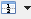
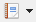
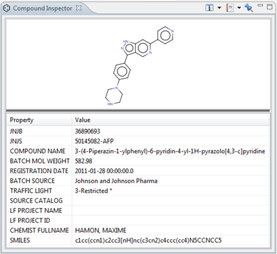

The Compound Inspector will show information about the compound of a selected well. The view contains 2 panels:
- Graphical representation: A display of the compound structure. Click and drag to rotate the structure.
- Property table: A list of properties of the selected compound.
There are some options available in this view:
|  |
Toggle the position of the two panels. |
|  |
Open or create a Saved View or Report. |
| Pin (freeze) the contents so they will no longer receive selections from other views. (It can still sent selections) |
To open the Compound Inspector, right-click on a cell in de plate grid > Inspectors > Compound Inspector
